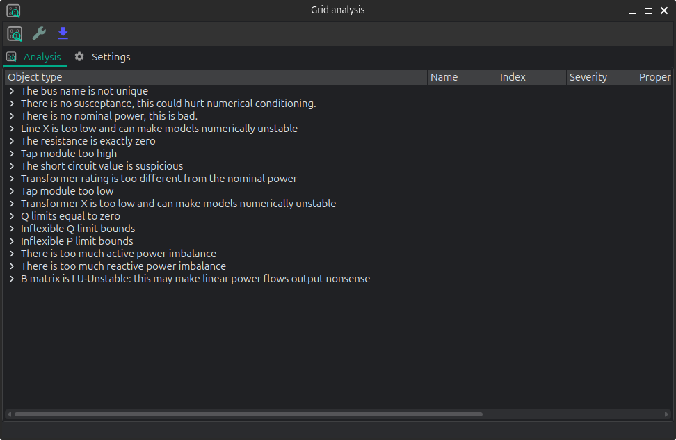

🪲 Model debugging

API
Inputs analysis
VeraGrid can perform a summary of the inputs with the InputsAnalysisDriver:
import os
import VeraGridEngine as gce
folder = os.path.join('..', 'Grids_and_profiles', 'grids')
fname = os.path.join(folder, 'IEEE 118 Bus - ntc_areas.veragrid')
main_circuit = gce.open_file(fname)
drv = gce.InputsAnalysisDriver(grid=main_circuit)
mdl = drv.results.mdl(gce.ResultTypes.AreaAnalysis)
df = mdl.to_df()
print(df)
The results per area:
P Pgen Pload Pbatt Pstagen Pmin Pmax Q Qmin Qmax
IEEE118-3 -57.0 906.0 963.0 0.0 0.0 -150000.0 150000.0 -345.0 -2595.0 3071.0
IEEE118-2 -117.0 1369.0 1486.0 0.0 0.0 -140000.0 140000.0 -477.0 -1431.0 2196.0
IEEE118-1 174.0 1967.0 1793.0 0.0 0.0 -250000.0 250000.0 -616.0 -3319.0 6510.0